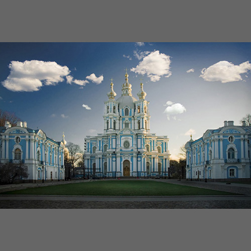

Museums |
Hermitage |
The State Russian Museum |
Russian Ethnographic Museum |
Cabinet of curiosities |
Tsarskoe Selo |
Russia's largest and one of the largest in the world of art and cultural-historical museums. Initially, an ever-growing collection of works of art acquired privately Russian Empress Catherine II, but since 1852 has been opened to the public. Modern State Hermitage occupies six buildings along the Neva embankment in the center of the city. The core of the Hermitage and the whole of St. Petersburg - the Winter Palace. Over one and a half centuries, the Hermitage assembled one of the world' s largest collections, numbering nearly three million works of art and monuments of world culture, from the Stone Age to the present century.
The most extensive museum of Russian art in the world. Located in the Mikhailovsky Palace. Branches of the museum located in the Mikhailovsky Palace, the Marble and the Stroganov Palace. Under the authority of the museum are also Michael and Summer Garden with House of Peter I. At present, the Russian Museum collection includes Russian and Soviet painting, sculpture, graphic arts, decorative and folk art (furniture, porcelain, glass, thread, paints, products of metal, fabric, embroidery, lace, etc.). In the department of ancient Russian icons are well represented XII-XV centuries.
One of the largest ethnographic museums in Europe. Founded January 22, 1902 as the ethnographic department of the Russian Museum. Located on the Engineering street next to the Russian Museum. The museum was opened to the public June 3, 1923. In 1934 it was transformed into an independent museum. It has a rich collection of cultural objects and the life of the peoples of the former Russian empire. In 1948, the museum's collection was increased at the expense of ethnographic materials of the Moscow Museum of the USSR.
The museum of curiosities, Anthropology and Ethnography named after Peter the Great. The first museum in Russia, established by Emperor Peter I in St. Petersburg. It has a unique collection of antiques, revealing the history and life of many peoples. But many of this museum is known for his collection of \u0026quot;freaks\u0026quot; - the anatomical curiosities and anomalies. Located on the Neva embankment in the historical center of St. Petersburg Kunstkammer is the beginning of XVIII century. symbol of the Russian Academy of Science. Currently, the Museum is one of the most full and interesting in the world. It has more than a million artifacts.
The monument of world architecture and the palace and park art. Includes a palace and park ensemble of XVIII-XIX centuries, the former royal residences, converted into a museum after the nationalization in March 1918. Homeport Museum has received in 1992. The museum-reserve includes: Katherine Park, Katherine Palace, the Alexander Park and the Alexander Palace
Monuments |
Chizhik-Pyzhik |
Rostral Columns |
Moscow Gates |
Bronze Horseman |
Alexander Column |
Katherine II Monument |
The monument is one of the smallest sites in St. Petersburg. It is believed that if the make a wish and get the coin in the pedestal on which stands the Chizhik-Pyzhik (coin must necessarily remain lying on the stone), then the desire will come true.
Decorated noses ships (rostra), or sculptural images. Usually rostral columns were erected in honor of Marine victories or as a symbol of the sea power of the country. The tradition of their construction dates back to ancient Roman custom of the erection of the pillar, decorated with trophies captured from the enemy, which was moved from land battles at sea.
Constructed in honor of the victorious conclusion of Russian-Turkish War (1828-1829). Located at the intersection of Moscow and Ligovsky prospects, the square of the gate. In May 1965, the area near the gates of Moscow was renamed the "Moscow". In October 1968, was restored historic name - the area once again became known as "Moscow Gates". By the name of the area was named and built in 1961, Metro.
The Bronze Horseman - the monument to Peter I on the Senate Square in St. Petersburg. The monument gets its name from the famous poem by Pushkin, but actually made of bronze.
Alexander Column - One of the most famous monuments of St Petersburg. Erected in the Empire style in 1834 in the center of the Palace Square to commemorate the victory over Napoleon, Alexander I.
Monument to Catherine II was created in 1862-1873 years, the sculptor MO Mikeshin. Installed it on Nov. 24, 1873 Ostrovsky Square, in the square in front of Alexandrinsky Theatre. Its base is surrounded by images of approximate Empress eminent Russia the second half of XVIII century. At the monument to Catherine Square in front of the theater popularly known as "Katherine garden".
Park Complex, a monument of landscape art in the first third of XVIII century in the heart of St. Petersburg. The park was laid on the orders and the original plan of Peter I in 1704 and created in the style of the Dutch baroque. Originally created as a royal summer residence.
The largest memorial park in downtown St. Petersburg, covering an area of almost nine acres. The majestic panorama of the vast parterre garden with a monument to the victims of the revolution is limited to the southern and eastern sides of the Summer and Mikhailovsky gardens, and the north side goes to the Neva and the area of Suvorov. History of the Field of Mars back to the first years of the foundation of St. Petersburg.
One of the oldest botanical gardens in Russia. Located on the island of Apothecary. Collection located on the garden of the Botanical Museum includes more than 80 thousand samples. The museum is dedicated to the Earth's vegetation, the history and evolution of plants and plant resources of Russia, the relationship of plants and humans.
Alexander Park area since the foundation of Peter and Paul Fortress in 1703 was its glacis. Even after the end of the Great Northern War in 1721, this site was built a long time. For the first time the device is the park take care to Emperor Alexander I. Also here is the St. Petersburg zoo.
Anichkov bridge over the Fontanka River is located at the site of Nevsky Prospect. From small bridges is perhaps the most famous bridge of St. Petersburg. Although it can not be called the most beautiful, but a group of sculptures of horses made Klodt bridge one of the brightest business cards of the city. To photograph the bridge without the passers-by and tourists can not, at any time of day or night.
Egyptian Bridge over the Fontanka River is located in alignment Lermontovsky Avenue. Despite the fact that this bridge is removed from the front of Petersburg, he looks very attractive and beautiful. Perhaps this was due to the fact that the bridge was constructed in close proximity to numerous military barracks, and such a way the government tried to add the army of the imperial patriotism and unquestioning obedience to orders higher. The more symbolic that this bridge 5 times seriously repaired during the last 30 years of autocracy, but still, in the end he fell just in the first days of Russian revolution in 1905.
It connects the central part of the city between the Winter Palace and the Admiralty and the city islands, with the main Market of the country. Thus we may assume Palace Bridge bridgehead Russia Empire, joining the top echelons of power and domestic business magnates of the past.
Potceluev bridge over the sink in the alignment of the Glinka street. Hence, three minutes walk to the theater area and the State Conservatory, and in the other side of the road enters the area of Labor and on to the Neva River, right on the bridge of Lieutenant Schmidt.
Trinity Bridge connects the center of St. Petersburg and Petrograd side in the immediate vicinity of the fortress. One of the most beautiful bridges of the city.
Lion Bridge over the canal Griboedov located in alignment Lion Lane. One of the iconic pedestrian bridges of St. Petersburg. The equal to the Banking and Anichkov bridge is a must pilgrimage for tourists from the techniques of photography.
|  |
Галерея |
Начать показ |
Назад |
Вперед |